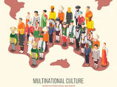

Exploring the beauty of nature

Nature is all the animals, plants, and other things in the world that are not made by people, and all the events and processes that are not caused by people. The most amazing thing about nature is its infinite variety. ... grasses that grow wild in nature.
Introduction to technology
We use technologies to exchange information, to clean our clothes, to prepare our meals and to get from one place to another. But even everyday items like door locks, floor panels and furniture are technologies that we now take for granted and that seem less impressive to us than self-driving cars or 3D printing.
Exploring cultural Diversity

Culture can be defined as all the ways of life including arts, beliefs and institutions of a population that are passed down from generation to generation. Culture has been called "the way of life for an entire society." As such, it includes codes of manners, dress, language, religion, rituals, art.